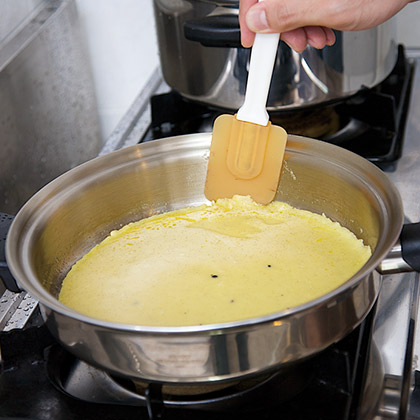

甜點分享
奶蛋薄派千層
示範鍋具
1公升長柄鍋 煎炸鍋材料
- 低筋麵粉250 公克
- 雞蛋液150 公克
- 牛奶500 毫升
- 奶油40 公克
- 鹽少許
- 糖20 公克
- 香草莢1 支
- 糖粉少許
- 蜂蜜30 公克
調味料
- 香橙酒30 c.c.
- 藍莓10 顆
- 覆盆子10 顆
- 糖50 公克
作法
-
1
將奶油溶化，香草莢剖開取出香草籽，備用。 -
2
將作法1 與低筋麵粉、雞蛋液、牛奶、鹽混合打勻成麵糊，靜置10分鐘備用。 -
3
將麵糊舀出60公克，倒入已預熱的煎炸鍋，煎熟後取出，刷上蜂蜜，採對切方式切成12 片扇形麵皮，並將每一扇麵皮堆疊起來，備用。 -
4
醬汁的糖放入1公升長柄鍋內，煮成焦糖後加入香橙酒，讓酒精揮發一下，再放入藍莓、覆盆子，並在鍋內將水果搗碎，使其變成醬汁。 -
5
將作法3 放入盤中，淋上作法4 兩湯匙，最後灑上糖粉即完成。 -


食譜示範 林玉罡